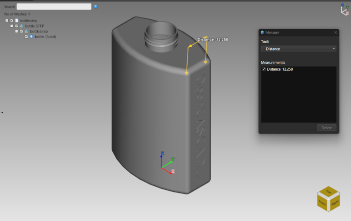
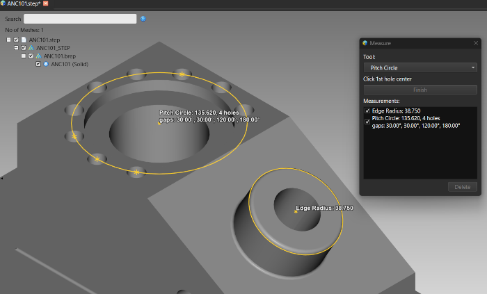
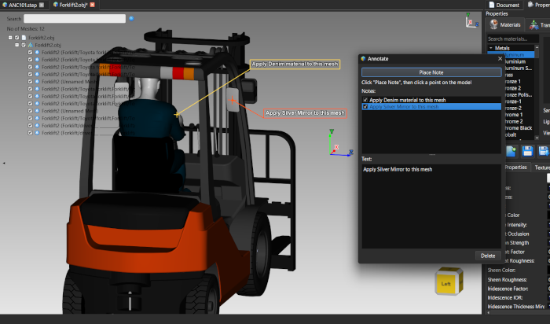
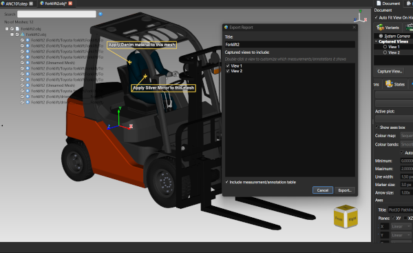
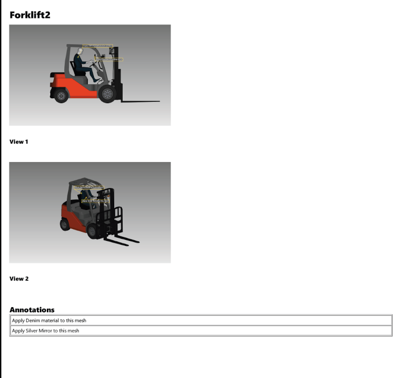

Leçon 27 : Mesurer, annoter et rapporter
Introduction
ModelViewer mesure directement sur le modèle : points, distances, angles, rayons, diamètres, aires, longueurs d'arête et distance le long d'une surface. Vous pouvez laisser des annotations de type pense-bête sur le modèle et tout réunir dans un rapport PDF avec des vues capturées. Cette leçon présente les outils par ordre de fréquence d'utilisation.
bottle.step, CAD.step ou le chariot élévateur : les modèles STEP, IGES et BREP contiennent des arêtes et des surfaces exactes ; les outils de rayon et de concentricité peuvent donc s'accrocher aux centres analytiques des cercles. Sur les maillages OBJ et glTF, les mêmes outils utilisent la géométrie du maillage et certains ne sont pas disponibles.
Votre première mesure

Une mesure de distance entre deux points sur un modèle STEP, avec la boîte de dialogue Mesurer ouverteLes outils
Les outils sont regroupés en Point et distance, Arcs et cercles, Faces et Arêtes.
| Outil | Sélections | Ce qu'il mesure |
|---|---|---|
| Point | 1 clic | Les coordonnées 3D d'un point |
| Distance | 2 clics | La distance en ligne droite entre deux points, qui peuvent se trouver sur des maillages différents |
| Distance géodésique | 2 clics | La distance mesurée LE LONG de la surface, par exemple autour d'une pièce courbe ; les deux points doivent être sur le même maillage |
| Angle à 3 points | 3 clics | L'angle au premier sommet choisi entre les rayons vers les deux autres points |
| Outil | Sélections | Ce qu'il mesure |
|---|---|---|
| Rayon d'arc à 3 points | 3 clics | Rayon et centre d'un arc passant par trois points de son bord |
| Rayon d'arc centre + 2 points | 3 clics | Rayon d'un arc ou d'un trou à partir d'un centre choisi et de deux points du bord ; sur STEP/IGES/BREP le centre s'accroche au centre exact, même pour un trou débouchant |
| Rayon d'arête | 1 clic | Rayon, centre et axe exacts d'une arête circulaire (bord d'un trou ou d'un bossage) ; STEP/IGES/BREP uniquement |
| Cercle primitif | 3 clics ou plus, puis Entrée/Terminer | Diamètre du cercle de meilleur ajustement passant par trois centres de trous ou plus (une couronne de perçages) et angle entre trous voisins |
| Concentricité | 2 clics | Si deux trous ou bossages partagent un axe : distance entre centres et angle entre axes ; STEP/IGES/BREP uniquement |
| Diamètre cylindrique/conique | 1 clic sur la surface courbe, pas sur son bord | Diamètre d'un cylindre ou d'un cône au point choisi (il varie le long d'un cône) ; possède ses propres options ci-dessous |
| Outil | Sélections | Ce qu'il mesure |
|---|---|---|
| Face à face | 2 clics | Distance perpendiculaire entre deux faces presque parallèles, sinon l'angle entre elles |
| Point à face | 2 clics | Distance perpendiculaire d'un point au plan d'une face |
| Aire de la face | 1 clic | Aire d'une face : le triangle choisi plus chaque triangle connecté et coplanaire |
| Distance minimale | 2 clics | Véritable distance entre les points les plus proches de deux surfaces ; chaque sélection s'étend à toute sa région lisse. Fonctionne aussi sur un seul maillage, par exemple pour un contrôle d'épaisseur de paroi |
| Outil | Sélections | Ce qu'il mesure |
|---|---|---|
| Longueur d'arête | 1 clic | Longueur d'une arête, droite ou courbe |
| Arête à sommet | 2 clics | Distance perpendiculaire d'un point à la droite d'une arête |
| Arête à arête | 2 clics | Distance perpendiculaire entre deux arêtes presque parallèles, sinon l'angle ; traite aussi les arêtes gauches (angle seulement) |
| Arête à face | 2 clics | Distance perpendiculaire d'une arête au plan d'une face, sinon l'angle |
| Longueur de chaîne | 2 clics ou plus, puis Entrée/Terminer | Longueur totale d'une suite connectée d'arêtes : un cordon de soudure ou un périmètre fermé ; chaque nouvelle arête doit partager une extrémité avec la chaîne actuelle |

Un rayon d'arête et un cercle primitif mesurés sur une pièce CAOOptions de diamètre cylindrique
Tant que Diamètre cylindrique/conique est l'outil actif, des options supplémentaires règlent l'ajustement utilisé sur les maillages non CAO (propres à la session, non enregistrées dans le document) : Tolérance d'angle (35 degrés par défaut), Taille min. de région (24 points) et Diamètre min./max. (0 = aucune limite) pour rejeter les ajustements trop petits ou trop grands.
Annotations
Une annotation est un pense-bête de texte libre ancré à un point de la surface d'un maillage et relié à une étiquette de texte déplaçable par une ligne d'appel. Ouvrez-la avec Outils → Annoter.... Mesurer et Annoter sont mutuellement exclusifs : armer l'un désarme l'autre.

Deux annotations sur un modèle, avec la boîte de dialogue Annoter à côtéExporter le rapport
Outils → Exporter le rapport... écrit un PDF composé de vues de caméra capturées et, facultativement, d'un tableau de toutes les mesures et annotations.

La boîte de dialogue Exporter le rapport avec deux vues capturées et l'option de tableau cochée
Une page du rapport PDF exporté avec une vue capturée et le tableau